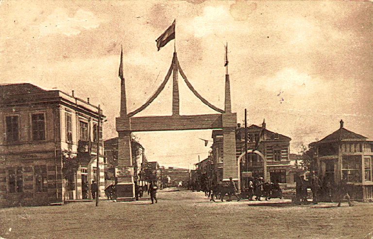
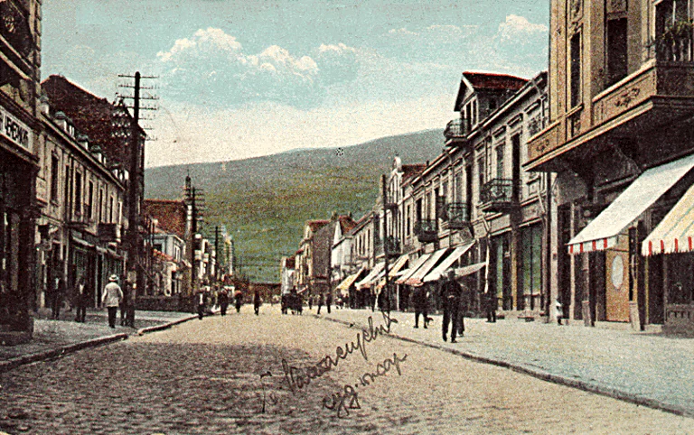
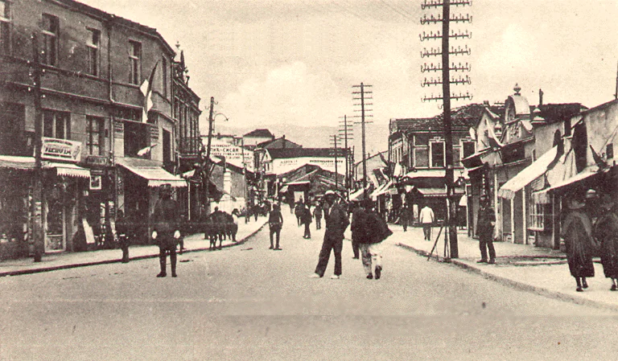
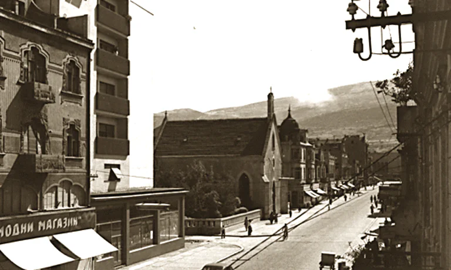

Green Market
- Production
- UFUŽ and Documentary Film Prague
- Screenplay and direction
- Slavko Janevski and EMAN CANERA
- Year
- 1959
- Length
- 00:18

Christian houses in Skopje - 1870.

Part of the old Skopje bazaar, 1902. A row of shops with shutters in front of the Kuršumli An. In the background is the tower of the Gülşen Hammam.

The main street as it was taking shape (today "Makedonija" Street, running from today's Museum of the City of Skopje to the Stone Bridge). On the right is the Gothic Catholic church, and on the left several buildings. The section by the Stone Bridge was paved in 1911 so that Sultan Mehmed V (Reşad), who came to visit Skopje before going on to the Field of Kosovo, could pass.

The photograph was taken from the building of the old railway station - today's Museum of the City of Skopje - built in 1873 under the Ottoman Empire. In the foreground is the approach to the station, with fenced green areas. Beyond is the main street leading to the square. At the start of the street on the left is the hotel "Rusija".

View towards the main street "Makedonija". The gate was put up in honour of an important guest. To its left is the hotel "Rusija". - beginning of the 20th century.

The main street with the hotel "Moskva" - the 1920s

The main street, today's Makedonija, leading from today's Museum of the City of Skopje to the square. At the end of the street is the Officers' Club, and to its right the Chamber of Commerce - the 1930s.

The main street, photographed towards today's Museum of the City of Skopje - around 1920.

The main street (today's Makedonija), from the square towards the railway station - around 1920.

The main street, Makedonija, from today's Museum of the City of Skopje towards the square. On the left is the hotel Bristol, and on the right the Kranga Palace. (the 1930s)

The main street leading from today's Museum of the City of Skopje to the square. Photographed by today's hotel "Bristol" and the Kranga Palace. In the background is the Officers' Club - around 1935.

The main street leading from today's Museum of the City of Skopje to the square. The building on the corner is the Kranga Palace - the 1930s.

The Kranga Palace. - the 1930s.

The street along the quay on the right bank of the Vardar. - the 1930s

A street in the old part of the city towards the old bazaar - end of the 19th century.

The street from the Stone Bridge towards the old bazaar. - the 1920s

A street in the old part of the city, towards the Čair quarter. In the foreground are a horse-cab stand and the old Turkish fountain. In the background are buildings of old vernacular architecture - the 1920s.

The Stone Bridge towards the old bazaar. On the left is a row of shops, and on the right the building of the dentist Dr Ruben and a row of shops towards the old bazaar - around 1935.

"Kruševska" Street in the Pajko quarter, the 1920s.

This street no longer exists. It ran parallel to the main street, from the square towards the old railway station (today's Museum of the City of Skopje) - the 1920s

The main street (today's "Makedonija") - the 1920s.

A street of the old bazaar in Skopje. In the background the Mustafa Pasha Mosque. - the 1930s

A street in the old bazaar in Skopje. In the background is the Mustafa Pasha Mosque. - the 1930s

"Cvetan Dimov" Street in the Čair neighbourhood, the 1940s. In the background is the Mehmed Pasha Mosque.

Skopje, the 1950s. The entrance to the old Skopje bazaar - the site of the "Most" department store. In the foreground is a group of shops, demolished after the 1963 earthquake. On the left is part of the Skopje fortress - Kale. In the background is the Mustafa Pasha Mosque.

The little square in the old Skopje bazaar, the 1950s.

11 October Street, photographed from the square towards today's Assembly of the Republic of Macedonia. In the background is the old Interior Administration building. - the 1950s

11 October Street with the Assembly of the Republic of Macedonia on the left. The medieval tower can also be seen on the left. At the back of the photograph is part of the old post office building. - end of the 1950s

"Goce Delčev" Street, photographed from the square. In the foreground on the left is part of the hotel "Makedonija", which collapsed in the 1963 earthquake. - the 1950s

The main street towards the square. In the foreground is the Catholic church. - the 1950s

The main street towards the railway station (today's Museum of the City of Skopje). On the left is the Catholic church. - the 1950s

The main street "Makedonija", towards the square. - the 1950s

Skopje, 1950. The western part of the main street. On the left is the hotel "Moskva".

In the foreground is the crossroads of 11 October Street and Kočo Racin Boulevard. To the right of the tower under construction is the old army bakery from the First World War - the 1950s

The crossroads of Kočo Racin Boulevard and 11 October Street. - the 1950s

The street beside the City Hospital and the Workers' University - the 1950s

11 October Street - end of the 1970s, towards "Makedonija" Square.

View from 11 October Street towards "Makedonija" Square. On the left are apartment buildings, on the right the electricity company building. - end of the 1970s

 Aqueduct4 postcards
Aqueduct4 postcards Kale30 postcards
Kale30 postcards Bridges60 postcards
Bridges60 postcards Quay58 postcards
Quay58 postcards Square46 postcards
Square46 postcards Buildings66 postcards
Buildings66 postcards Christian churches19 postcards
Christian churches19 postcards Muslim buildings33 postcards
Muslim buildings33 postcards Officers' Club29 postcards
Officers' Club29 postcards Theatre28 postcards
Theatre28 postcards Railway station13 postcards
Railway station13 postcards Schools36 postcards
Schools36 postcards Parks12 postcards
Parks12 postcards Markets18 postcards
Markets18 postcards Streets38 postcards
Streets38 postcards Panorama I60 postcards
Panorama I60 postcards Panorama II30 postcards
Panorama II30 postcards Collages55 postcards
Collages55 postcards Floods9 postcards
Floods9 postcards Earthquake27 postcards
Earthquake27 postcards Skopje 200026 postcards
Skopje 200026 postcards